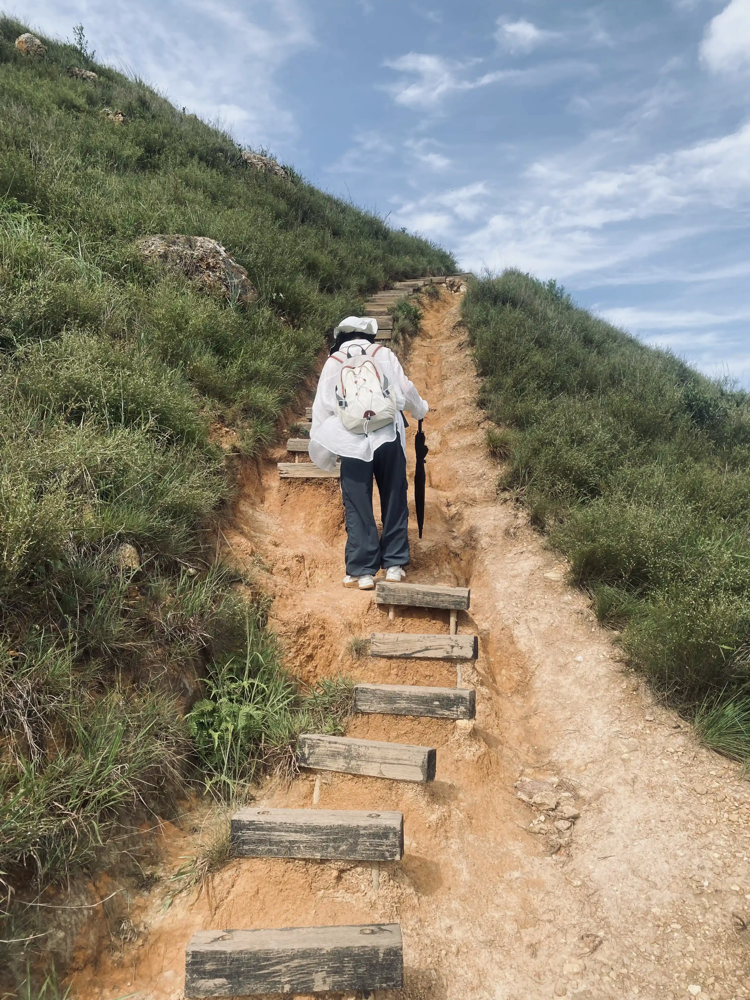
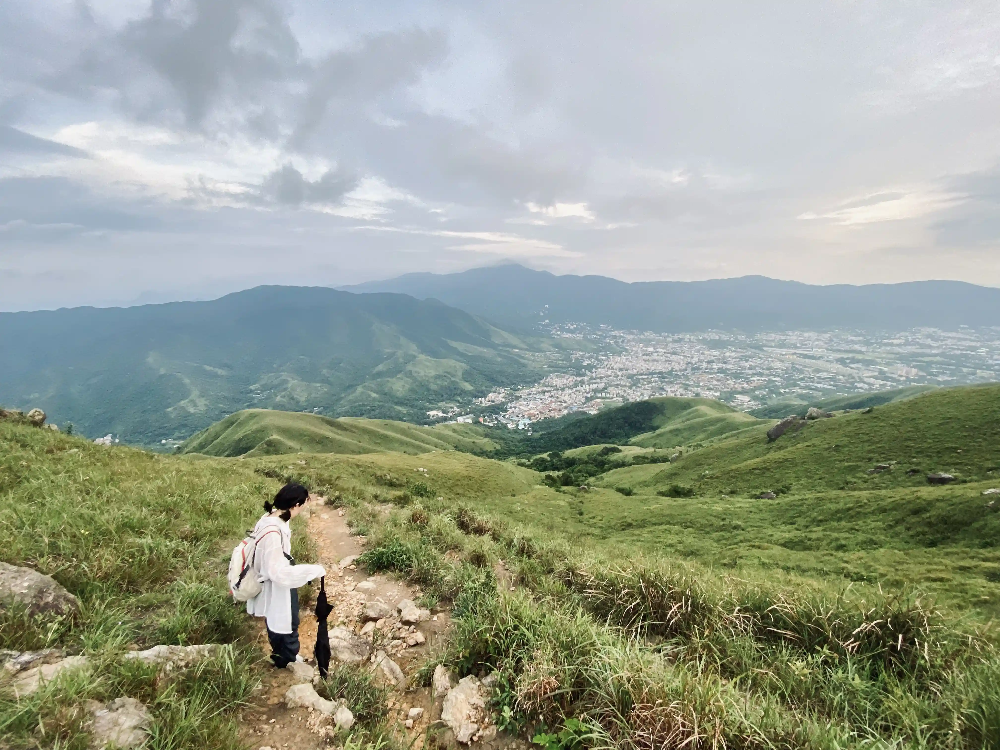
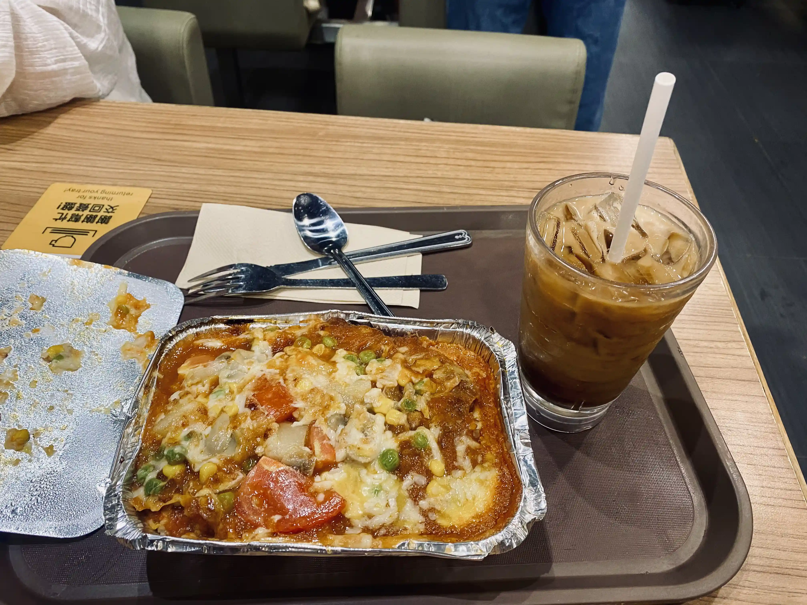

香港雞公嶺
🎵 你知道天空有多蓝 - 椅子乐团 The Chairs
上周二和女友去爬了香港 雞公嶺，之所以想去，是之前看到了一些別人拍的圖片，山頂大片的綠、天空大片的蓝，還有雪白得刺眼的 濃積雲，就像是宫崎駿動画裡的埸景，一直想去看看。要看到這樣的景色，得在夏天去才行，這時山上的草還是綠的，也更容易看到大片的好看的濃積雲。
雞公嶺山上几乎沒有遮擋、沒有補給的地方、沒有厠所，所以要做好防晒中暑的準備，小紅書上看到的建議是人均携帯三升以上的水。我們出發前買了將近八升的水，一些運動飲料，一些礦泉水，還帯了相機、移動電源、音響、干粮、防晒霜、雨傘，負重還不少，所幸登山包有腰帯和胸帯可以將負重分攤在上半身，背了一天肩膀也沒有酸痛。如果天氣不那麼熱，可以少帯點水，我們下山時已經沒什麼太陽了，出汗少了，最後還剩了近兩升水。
我們是從深圳過去的，雞公嶺在香港元朗，离褔田口岸最近，大多數人也是從這個口岸過去的。過了口岸後，根據指示牌走到坐公交的地方，找到 75 路小巴士，坐到逢吉鄉就能到達雞公嶺附近了，車程大概二十多分鐘。 75 路小巴的價格現在是 11 港幣，車上沒看到刷乘車碼的地方，建議是出發前準備一些散錢 (公交站附近沒看到店鋪，要兌散錢也不方便)，我們之前去香港剛好剩了 22 港幣散錢，還挺幸運的。 75 路小巴是沒有逢吉鄉這個站的，逢吉鄉在 新潭路，近宏園 這站後面一些，上車的時候和司機說一聲就好了，差不多到了司機會提醒下車。
到了逢吉鄉，還要往裡面走一段路才能到達登山口，路上會經過一間士多店，如果覺得水不够，可以在這裡补給一下，過了這家店後面就沒有补給點了。雞公嶺的登山口不是很明顯，它在一個蓝球場的邊上，入口处有根電綫杆，還有一小段上行的階梯，但沒有指示牌。爬山建議下載一個「兩步路」App，上面有很多人分享的路綫󠄂，選一條跟著走就好，可以避免在山上迷路 (虽然路綫基本只有一條，但也有一些分叉的地方)。如果找不到登山口，利用兩步路也能导航找到。不過我不喜歡這個 App，功能太雜了，設定路綫我搞了好一會儿，而且弹窗干擾也多，爬完山我就把它卸了。
我們找到登山口開始登山時已經是下午兩點半左右了，最終我們花了快五個多小時才爬完，下山時天都黑了，而我們只能摸黑下山。如果你想去爬，一定要規劃好時間，如果爬得慢，大概要花五到六小時，要看看日落的時間，最好能赶在天黑前下山，不然下山會很刺激。
上山路有一些木條搭建的階梯，但階梯之間是空的，也不是很好走。上山基本都是在爬升，太阳猛烈，山上也沒什麼風，悶熱悶熱的，身上很快就被汗水打湿了，每爬一小段我們就得停下來歇一陣，补补水，讓心率緩緩，緩慢地往上爬著。
山上的風景還不錯，確實有大片的緣，像是用草坪將整片山鋪滿一樣，草大多都有小腿高 (建議是穿長褲來爬，不然行走在草堆裡會有點不舒服)。在山上能俯瞰整片元朗區和遠处的深圳，視野很好。不過天公不作美，天上烏雲比較多，漸漸遮住了太陽，看不到蓝天和大朵的濃積雲，草地也因為沒有阳光顯得有些黯淡，看不到想看的畫面。但沒有太阳直射在身上，倒也讓我們後面走起來沒那麼熱。
一直走，偶尔停下來补水、拍點照片，不知不覺快日落了，我們也才差不多走到了下坡的路段，還有近四分之一的路沒走完。這時還碰到了一個反向穿越的人，他看起來就帯了瓶水，也許是打算快速穿越吧。因為是工作日來的，這一路上也見不到几個人，上山時只見到一個下山的人和一個上山的人 (後來他原路下山了)。爬到中間碰到了三個女人在拍照，最後一個就是剛剛上山的男人了。說實話如果沒有太多徒步經驗，不建議一個人來，也不建議工作日人少的時候來，多些人，真出什麼事還能相互照應一下。
隨著太陽下沉，路也慢慢地變得有些看不清，我們開始用手機打手電摸黑往下走 (還好帯了移動電源，不擔心沒電)。說實話還是有點怕的，放眼望去一片漆黑，看不到路在哪，只能模糊地看到山體，還有很長的路要走，有點慌。下山的路很難走， 有的有很多碎石，有的有一些大块的石頭，有的是坑坑洼洼的泥路，(像是在玩現實版的 死亡擱淺) 一個不小心，很容易崴到脚 (負重的話建議帯登山杖，减輕膝盖的壓力，也能走的更平穩)。有的路几乎被雜草埋起來，我也很擔心會不會突然冒出一條蛇咬我一口。儘管打著手電，但也只能照亮脚下一兩米的路，還好有兩步路的路綫指引，還不至於迷路。夜裡虫鳴更响亮了，像置身野外的荒郊野嶺中，我倆一前一後地走著，我在前面探路导航，不停地播报著前方的地貌，「前面有很多碎石，小心地滑」、「這裡比較難走，小心一點」、「慢慢走，每一步踩穩了再走」⋯⋯ 我想女友也是有些紧張擔心的，不停地說著話，聴到人聲她也會安心點。已經是晚上了，按理說也不那麼熱，下山除了路難走、膝盖壓力大，也還算輕鬆，但可能是因為紧張害怕，肾上腺素上升，感覺身體一直在發熱冒汗。但總不能在山裡過夜，不管如何只能小心點，一點點地往出口走。走呀走，看到遠处的烏雲有閃電不斷閃爍，儘管离我們還有一段距离，但還是會擔心它會飄過來，如果打雷下雨，下山就更難了，總之要加快脚步，但也還是要注意脚下，慢即是快。一直提心吊膽地走著，慢慢開始看到底下的公路，聴到車的聲音、狗的吠聲，應該快能到山脚了，心裡稍微輕鬆點。繼續走，終於走到了有水泥階梯的地方，總算是從山裡出來了，過了一道橋，看到了路灯和馬路，有種從野外回到人類文明世界的安心感，終於安全了。
出口的地方是橋頭，沿著馬路走走就可以找到 77K 大巴的公交站牌，不過要注意方向，兩個方向的站牌隔了段距离，總之跟著导航就好。 77K 大巴是可以用乘車碼的，它一直運行到深夜，所以不用擔心下山太晚坐不上車。在站牌那等了會儿，之前那片烏雲也赶了過來，開始下雨了，但幸運的是車沒多久就來了，沒怎麼淋雨，在車上時，雨才開始下大了。坐 77K 去到石湖墟郵政局，在這裡可以坐東鐵綫去到罗湖口岸，或者去到落馬洲回到褔田口岸。
在石湖墟郵政局附近的大家樂吃了份猪排飯，猪排很軟，補充了大量碳水，人又重新活過來了。當時也八點多了，但不少人點餐還會點凍咖啡，不怕睡不著嗎？不過我點的也是凍咖啡就是了，很甜的咖啡，能止喝，但說不上好喝。吃完又去 711 買了兩瓶朝日的限定款啤酒，每次來香港，回去時我都會逛 711 買點境內不常見的啤酒，味道大多也還不錯。
香港的徒步路綫大多都保留著原生態的樣子，人的痕迹比較少，是親近自然的好去处，雞公嶺也是如此，虽然很累，也有些意外，但走在大片草叢中我也挺喜歡的，能讓人感到放鬆。下次再來，也許是以後的某個夏天了，希望下次能看到想看的畫面。
最後附上一些隨手拍的圖片：
{kind=link}

{kind=link}
{kind=link}
{kind=link}

{kind=link}
